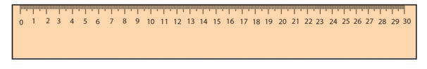
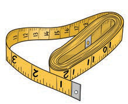
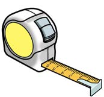
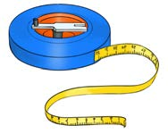

Ruler



Tape measures
Activity 2: Measuring length of different objects
1. Identify any four objects in your environment whose lengths can be measured by using non-standard and standard tools.
2. Choose one object then measure its length using both non-standard and standard tools.
3. Record its length using both non-standard and standard tools.
How comparable are they?
Activity 3: Measuring the length of an exercise book
-
1. Measure the length of your exercise book in centimetres using a ruler.
-
2. Record the length measured in task 1.
-
3. Repeat task 1 by using a tape measure.
-
4. Record the length measured in task 3.
-
5. Compare the measurements obtained in task 3 and 4.
-
6. Explain your observation from task 5?